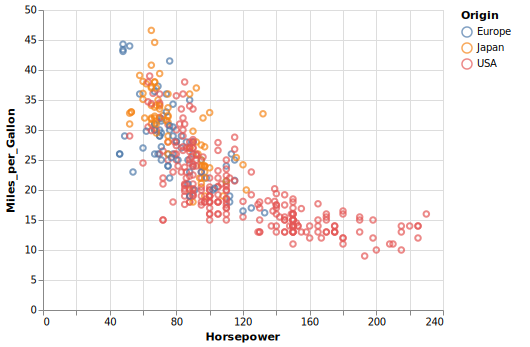

The goal of altair is to help you build Vega-Lite visualizations. This package uses reticulate to provide an interface to the Altair Python package, and the vegawidget package to render charts as htmlwidgets. To avoid confusion, the capitalized word Altair shall refer to the Python package; the lower-case word altair shall refer to this R package.
This version of the R package supports Python Altair version 4.2.0.
Example
This example is discussed in detail in our Getting Started article:
library("altair")
vega_data <- import_vega_data()
chart <-
alt$Chart(vega_data$cars())$
mark_point()$
encode(
x = "Horsepower:Q",
y = "Miles_per_Gallon:Q",
color = "Origin:N"
)
chart
Some things to keep in mind:
Where you see a
.in the Python examples, use a$instead.In your data, columns that contain dots can be wrapped in square brackets in Altair specifications, e.g.
[Sepal.Width], to keep Altair from throwing an error. Alternatively, you can use a double-backslash, e.g.Sepal\\.Width.
These and other “gotchas” are compiled along with workarounds in an article: Field Guide to Python Issues.
Installation
You can install altair from CRAN with:
install.packages("altair")The development version of is available from GitHub:
# install.packages("devtools")
devtools::install_github("vegawidget/altair") Because of Python, there may be some additional installation steps, described in greater detail in the Installation article.
-
Python must be installed on your system. We have had success using Conda: in particular, Miniconda works well and installs more-quickly than Anaconda.
If you work in a corporate or institutional environment, you may have to specify the location of your SSL certificate, or deal with a proxy. The installation article has a section on this.
Create a Conda environment called
"r-reticulate". The reticulate folks recommend standardizing on a common name for all packages that use reticulate. For more information, there is a section in the installation article.Install Altair into your
"r-reticulate"environment usingaltair::install_altair().
You may wish to add a line like this to the .First() function in your .Rprofile:
reticulate::use_condaenv("r-reticulate")The use_condaenv() function is called to provide a hint to reticulate on which Python environment to use.
Optional installations
If you have the V8 installed, you can use vegawidget’s image-generating functions to convert Altair charts into SVG strings or write SVG files. With the rsvg and png packages installed, you can get a bitmap array, or write PNG files.
When knitting to a non-HTML format, e.g. github_document, this package provides a knit_print() function that will intercept the normal renderer, using instead its own renderer, allowing you to specify "png" , "svg" or "pdf". Like the image functions, this requires that the V8 package be installed, as well as rsvg and png. MacOS users will require an X11 system, such as XQuartz, to be installed.
Articles
The documentation for this package includes some articles:
Getting Started: a walkthrough to get a first chart to work
Installation: some more-detailed instructions
Gallery:
- An adaptation to R of the Altair Example Gallery, to demonstrate (not least to ourselves) that we are not missing any of the expressiveness of the Python API. You may be interested in the Interactive Charts examples.
Examples:
Tooltips: shows how Vega-Lite implements tooltips as an encoding within a chart, with formatting options
Vega Datasets: work with Vega datasets using
import_vega_data()View Composition: how to facet, add layers to, repeat, and concatenate charts
Interactive Examples: a set of examples that work towards linked-brushing of two scatterplots
Field Guides:
Field Guide to Python Issues: “gotchas” and their workarounds
Field Guide to Rendering Charts: specify options to render charts as HTML
Acknowledgements
This package rests on these foundations:
Altair: Python interface to Vega-Lite
reticulate: R framework to work with Python
Vega-Lite: a grammar of interactive graphics
vegawidget: R package to render Vega(-Lite) visualizations
htmlwidgets: R framework to work with JavaScript visualizations
As well, a particular debt is owed to the folks behind the vegalite package, as it provided a lot of the inspiration for these efforts.
This project is a collaborative effort. In addition to the principal authors:
Alicia Schep has contributed the concatenation functions, as well as sorted out many of the Python, JavaScript, and package-API issues.
Heike Hofmann has been an invaluable advisor, providing incisive feedback, and insight into the fundamentals of interactive graphics.
Contributing
Please note that this project is released with a Contributor Code of Conduct. By participating in this project you agree to abide by its terms.
This project also has a Contributing Guide.